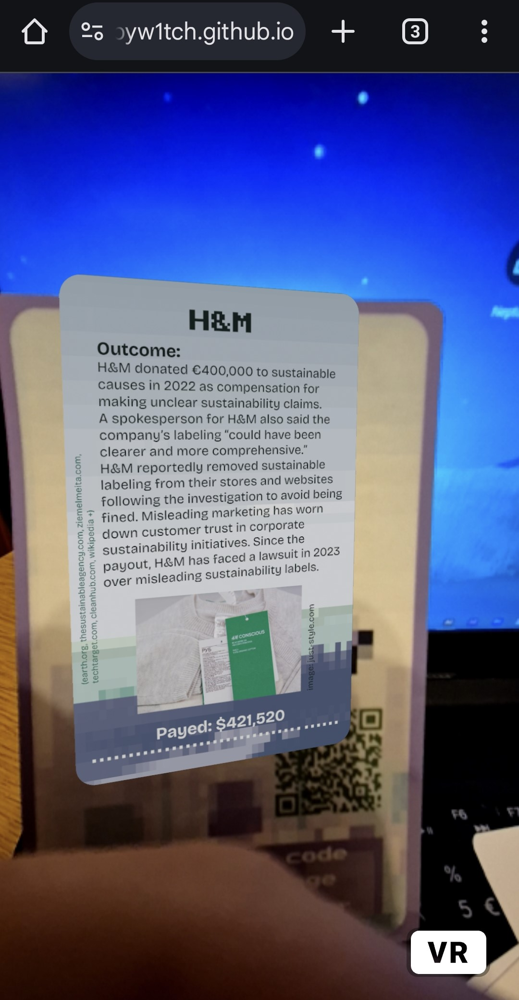
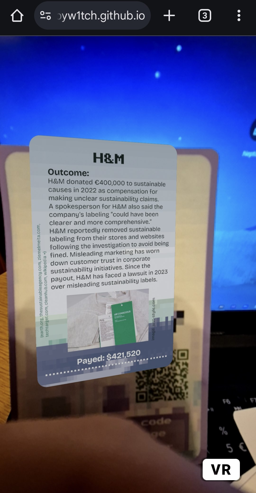

The Problem
Why does misinformation thrive in today's digital space? Younger generations are exposed to vast amounts of information daily, yet they often lack the critical tools to discern truth from manipulation. Education plays a crucial role in shaping conscious consumers of online content.
Sustainability and climate issues are particularly vulnerable to greenwashing and deceptive narratives. This project aims to combat this challenge through an engaging, educational game.
Thesis: Misinformation of todayProject Description
This masterwork project aims to passively educate young people (14+), especially high schoolers and adults, about greenwashing—its common behaviors, buzzwords, and real-world examples. Players will recall specific companies, cases, and language used to appear "green," helping them judge such claims in daily life. The 45–60 minute hybrid game uses physical cards, AR (Augmented Reality), and a mobile app. Players alternate between the roles of Brand spokesperson and communication advisor. Advisors compete to pitch the best defense to protect a company’s reputation from accusations, earning money in the process. Additional gamified actions, like secret attacks, occur within the app.
Gallery Preview

 


Recreate the game for yourself!
1. Open the PDF file and print it. You can choose to not print the word deck, instead to write them on separate papers.
2. You should print the Brand cards and cut them out.
3. When ready, please open the application link in Figma on your phone.
PDF to download the printable materials
Download Figma free to your phone

Highlighted Rules
- The player who gets the most rewarded with money wins!
- You have 2mins to prepare your pitch.
- If there are many people playing, you should create groups (5+), otherwise stick to the individual players setting.
- You have to incorporate at least 2 words from the pitch deck.
- You are not allowed to use your phone for anything else other than what is in the app.
PDF to download the full rulebook
Testing Feedback
Initial classroom test sessions have provided valuable insights. Players engaged actively, discussed their ideas of improvement, and I refined the game mechanism after each time.
"This game really opened my eyes to how easily greenwashing can trick people. I’ll be more careful when I scroll social media now!" - Student, 16
"The role-playing made it fun and engaging, while still being educational." - Teacher
"It was interesting to see how different accusations played out after scanning the AR images, and how greenwashing can be weaponized." - Student, 15Give Your Feedback
Learning Hub
Explore these resources to deepen your understanding of greenwashing and misinformation:
Contact
- Email: emese.hubert.contact@gmail.com
- Phone: +36308608315
- Social Media & Portfolio: linktr.ee/Hemi